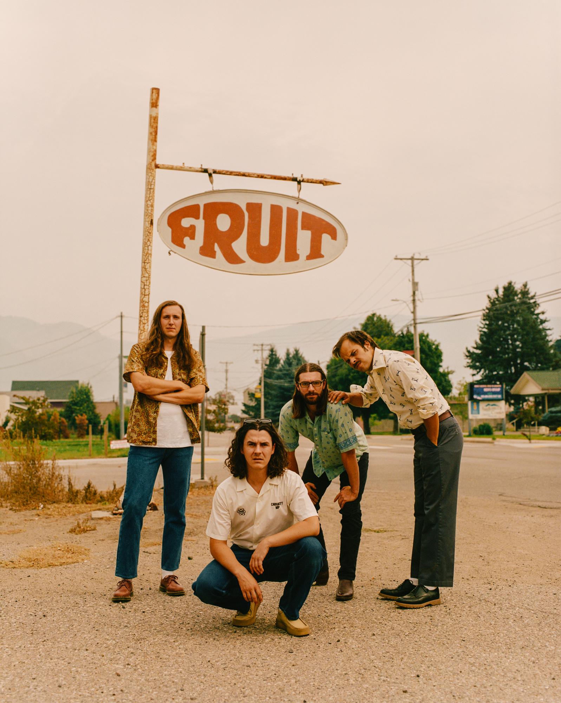
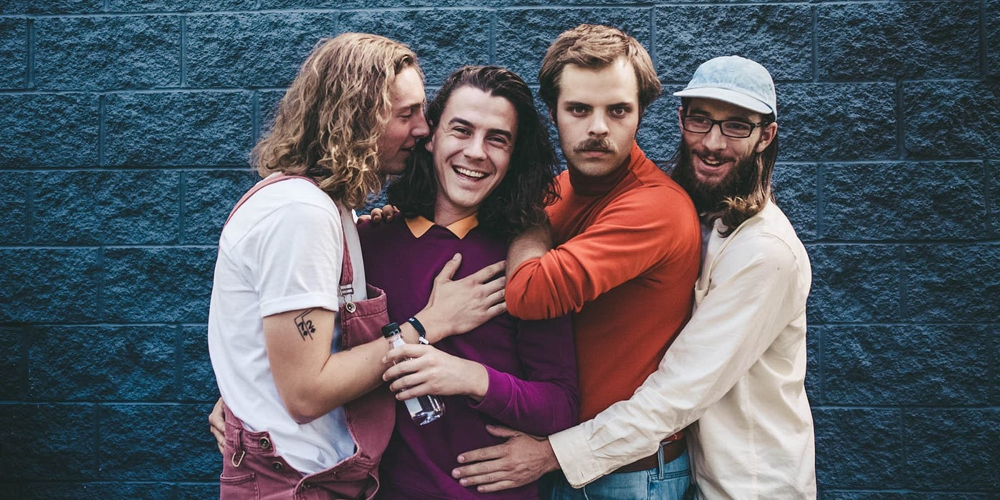

Peach Pit
Peach Pit is an indie pop band hailing from Vancouver, British Columbia, Canada. The band was formed in 2014 by high school friends Neil Smith and Chris Vanderkooy, who were later joined by Peter Wilton and Mikey Pascuzzi on bass and drums respectively. More recently, they have been joined by multi-instrumentalist Dougal Bain McLean, who plays synth, guitar, and fiddle.
The band describes their own music as "chewed bubblegum pop", but fans have also described their sound as something more akin to sad pop or surf rock. Their music is largely characterized by their soft spoken vocal style and guitar-driven rock melodies. Their music videos are produced by videographer Lester Lyons-Hookham. Interestingly, the band sported the same clothes for every live performance during their "Being So Normal" album phase after buying them for their first music video shoot.
Their debut EP, Sweet FA, was released in June 2016, produced and recorded by Smith's former roommate Harley Small at The Space Studios in Vancouver BC. They quickly began work on their follow up release and debut LP, Being So Normal, which was released in September 2017.
Following the success of their debut album, the band quit their jobs to go on their first tour of North America, Europe, and Asia from 2017 to 2018. They have performed at renowned festivals such as SXSW and Osheaga, and have shared the stage with notable acts like Mac DeMarco and Dayglow.
In April of 2020, the band released their highly anticipated sophomore album, "You and Your Friends." This album showcased a more mature sound while retaining their trademark laid-back charm. Tracks like "Black Licorice" and "Shampoo Bottles" received significant radio airplay and gained popularity on streaming platforms.
Past Content
Discography
Sweet FA (2016): Debut LP recorded by Smith’s former roommate Harley Small at The Space Studios in Vancouver
Being So Normal (2017): Another LP recorded by Small where their signature style was formed
You and Your Friends (2020): Breakthrough album which popularized the group with its melancholy undertones
From 2 to 3 (2022): The group's latest album that has mellower feel than their old, edgier tracks